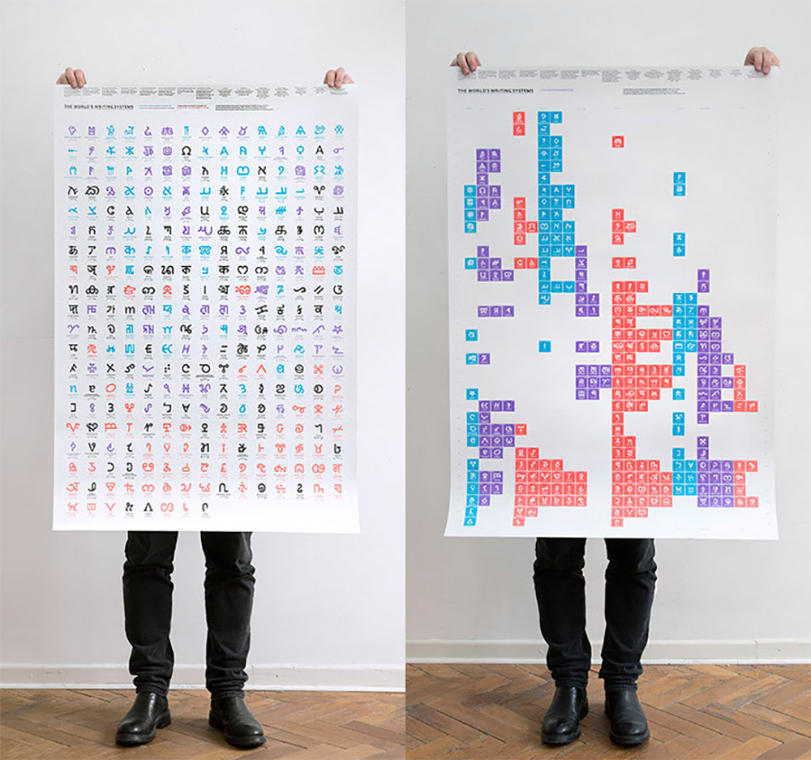
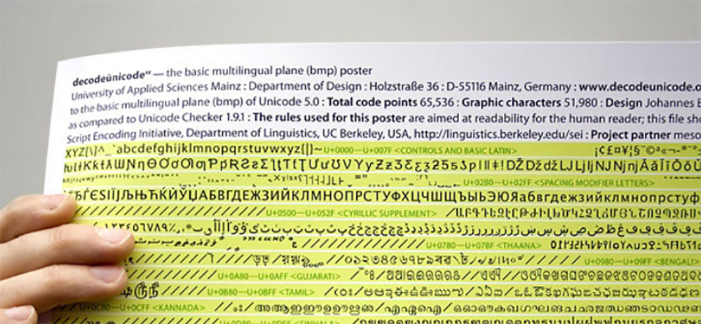

The new Unicode 14.0 posters created by ANRT and IDG, now available in limited quantities to North American residents!
A donation of $50 to or more to the Script Encoding Initiative entitles you to receive a poster showing all writing systems on Unicode 14.0 and beyond. This third revised edition of the World’s Writing Systems poster was created by the Atelier National de Recherche Typographique (ANRT), Nancy, France, Institut Designlabor Gutenberg (IDG), Hochschule Mainz, Germany with research provided by SEI. The silk screen posters measure 80 × 120 cm (approx. 31.5” × 47” or 2.6 × 3.9 feet).
There are two different versions, providing different views on writing systems of the world with one reference glyph per script: — one poster arranged (on the left above), and the other poster arranged geographically and chronologically (on the right above). For a donation of $75, you can receive both posters.
In order to get the poster, you need to make a donation and then separately send an email to Deborah Anderson with a copy of the donation receipt, a short note identifying which poster is desired, and the preferred mailing address for the poster.

A donation of $50 or more to the Script Encoding Initiative entitles you to receive a poster showing all the characters on Unicode 5.0's Basic Multilingual Plane (BMP). Created by the decodeunicode project, the poster measures 1.17 × 1.75 m (approximately 3'10" × 5' 9").
NOTE: As quantities are limited, it is important to take advantage of this offer soon. Once the supply is depleted, the entire contribution will be treated as a donation. However, we will make every attempt to keep this webpage up only as long as supplies last.
Donations are tax-deductible in the U.S., less the cost of the poster, approximately $17. A receipt will be sent to donors.
In order to get the poster, you need to make a donation and then separately send an email to Deborah Anderson with a copy of the donation receipt, a short note confirming you wish the Unicode 5.0 poster, and the preferred mailing address for the poster.
This offer has been made possible from the kind support of the decodeunicode project, particularly Johannes Bergerhausen, at the University of Applied Sciences, Mainz, Germany.
Donations to SEI help support SEI work. Funds are used primarily to pay script encoding specialists and graduate students to do research, write script proposals, and to create fonts on a per-script basis. Funding also covers research-related travel, administrative costs, and website maintenance. SEI's Progress page gives an overview of project achievements.